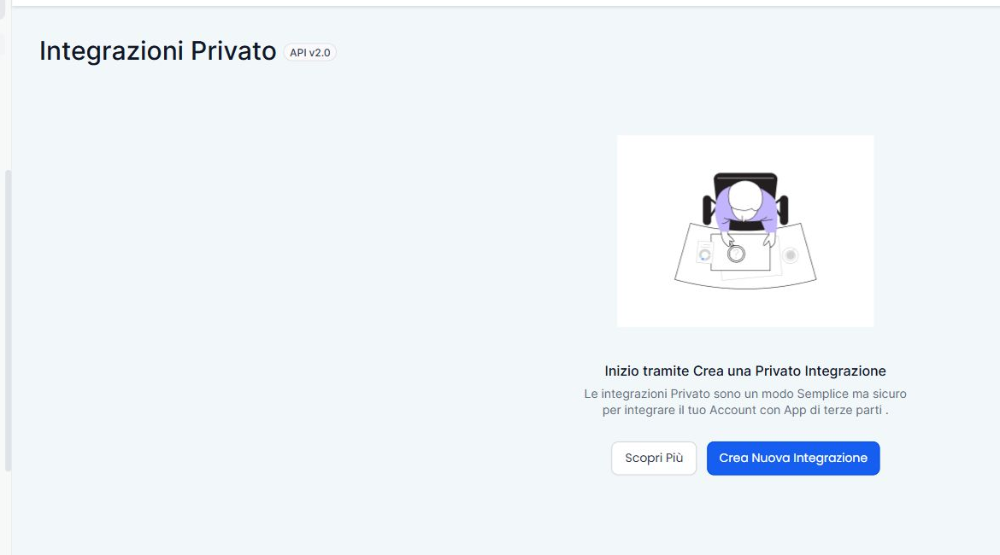
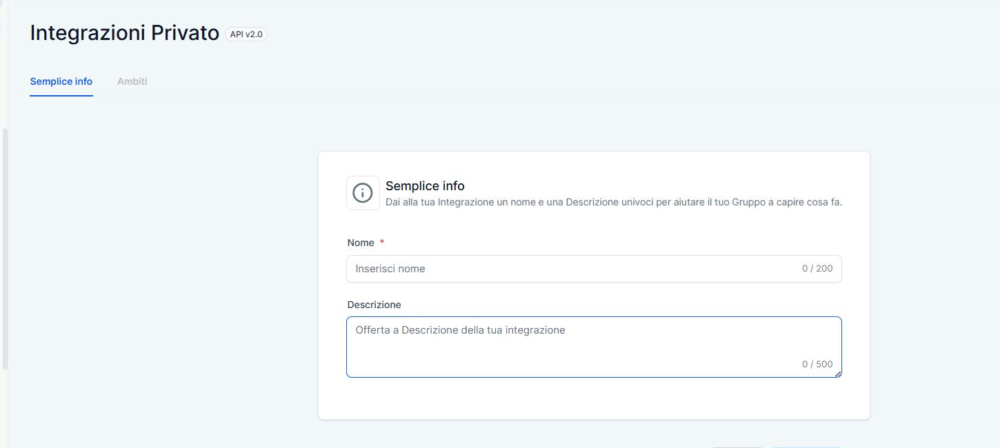
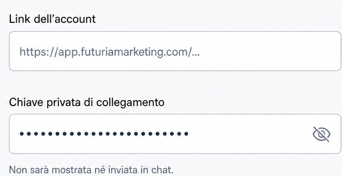

Collega Futuria CRM
Segui la guida: la chiave resta sul computer e l’agente riceve soltanto l’esito.
Guida visiva
1Apri Integrazioni private
In Futuria CRM vai su Impostazioni → Integrazioni private e seleziona Crea nuova integrazione.

Apri Futuria CRM2Crea la chiave privata
Assegna un nome riconoscibile, per esempio Agente AI Futuria. Poi apri Ambiti e seleziona tutti gli ambiti disponibili: così l’agente potrà usare tutte le funzioni supportate. Gli ambiti lasciati disattivati limiteranno le azioni nelle rispettive aree.

3Copia la chiave e torna qui
Completa la creazione, copia la chiave mostrata da Futuria CRM e incollala nel campo protetto a destra. Non inserirla mai nella chat.

Configurazione protetta
Dati di collegamento
Inserisci qui i due dati copiati da Futuria CRM. Restano su questo computer.
Collegamento completato
Account Futuria CRM
La credenziale è protetta dal sistema operativo. Puoi chiudere questa pagina e tornare al tuo agente.